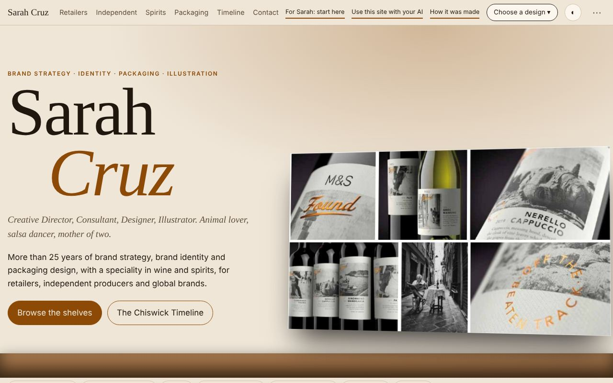

The showroom
Websites their owners own.
Built by agent teams, then handed over: the owner keeps the files, the history and the address. Every site here is public and live; open one to see it working.
People's sites
kate-curtis-evans.founder.sovereignweb.site 
artist.sovereignweb.site 
designer.sovereignweb.site



- 5sites working
- 3people's sites
- 1handed over
Tools and demos
pipeline-demo.sovereignweb.site 
tool.sovereignweb.site 
sovereignwebsite.site